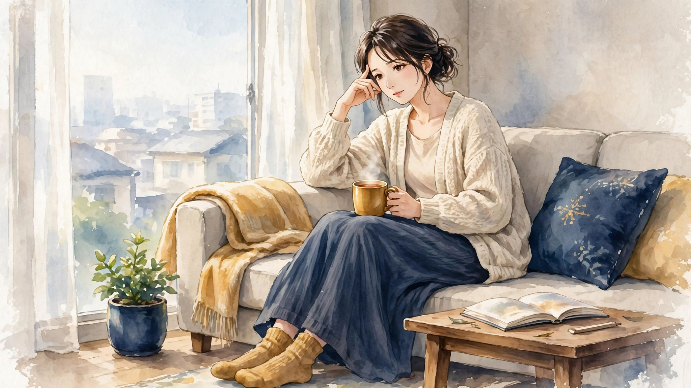

梅田で週末に気になる頭痛｜休みの日の過ごし方とセルフケア、受診の目安ハウツー

梅田で働く・暮らす方へ。週末の朝、平日より長く眠った日や平日の緊張がほどけたタイミングで「こめかみがズキズキと気になる」「頭全体が締め付けられるように重い」「せっかくの休日なのに頭が重くて動き出せない」と感じる頭痛について、一般的な解説と考えられる要因の整理、休みの日の過ごし方とセルフケア、医療機関への受診の目安をまとめました。一般的な健康情報としてお読みください。
#梅田 週末 頭痛#週末 頭痛 休みの日#休みの日 頭痛 セルフケア#梅田 女性専用 サロン 頭痛#土曜日 頭 ケア 梅田
週末に気になる頭痛とは（一般的な解説）
頭痛とは、病名ではなく、「こめかみがズキズキと脈打つように気になる」「頭全体が締め付けられるように重く感じる」「後頭部から首の付け根にかけて張りを感じる」といった感覚を表す言葉として使われることがあります。平日は気にならないのに、週末の朝や、休日の予定が始まる前に限って頭の重さを自覚する——そんな訴えは、働く女性からよく聞かれます。週末は、平日より長く眠る、起きる時刻がずれる、平日の緊張がほどける、といった生活リズムの変化が重なる場面でもあります。梅田では、週末に買い物や用事で駅ビルや地下街を歩く方も多く、「休みの日くらいは出かけたいのに、朝から頭が重くて動き出しが遅れる」という声も聞かれます。感じ方には個人差が大きく、気になりやすい場面も人によって異なるとされます。
大切なのは、「以前の自分と比べてどうか」「どんな週末に気になりやすいか」という視点です。起きた時刻や眠った時間、カフェインを取ったかどうかと一緒に、その日の頭の重さを簡単に記録しておくと、自分の傾向がつかみやすくなります。この記事では、週末に気になる頭痛の一般的な解説と、背景として考えられる要因の整理からお伝えします。なお、頭痛の感じ方だけで体の状態を判断することはできません。気になる変化が続く場合は、後半の「受診の目安」もあわせてご確認ください。
考えられる要因の整理
1つ目は、平日と週末で眠りのリズムがずれることです。平日の睡眠不足を補おうと週末に長く眠る「寝だめ」をすると、起床時刻が大きく後ろへずれ、体内時計のリズムと合わなくなることがあるとされます。寝すぎた日の午前中に頭が重く感じられる、という声は、その表れのひとつかもしれません。ただし、眠りの感じ方には個人差があり、「寝だめが原因」と決めつけられるものではありません。
2つ目は、平日の緊張がほどけるタイミングと、首・肩まわりのこわばりです。平日は仕事の姿勢や画面作業で首・肩に力が入り続け、休日に入って緊張がゆるむタイミングで、たまっていた張りを自覚しやすくなる方がいると考えられています。週末にソファや布団の上で長く横になる、スマートフォンをうつむいて見る時間が増える、といった休日ならではの姿勢も、頭を支える首まわりへの負担感と重なることがあります。東洋医学では、頭の側面は体の側面を巡る胆経のエリアと、耳まわりから肩へつながる三焦経のエリアと重ねて考えられてきた歴史があります。ただし、感じ方には個人差があり、「休日の姿勢が原因」と決めつけられるものではありません。
3つ目は、カフェインや食事、水分のリズムの変化と、気圧などの環境です。平日は決まった時刻にコーヒーを飲む方が、週末は起床が遅れて摂る時刻がずれたり、量が変わったりすることがあります。朝食を抜く、水分を取る間隔が空く、といった変化も、週末ならではの要素として挙げられます。また、週末に天気が崩れて気圧が下がる日は、体が外の変化に合わせようと働き、自律神経のバランスがゆらぎやすくなるとされます。要因はひとつではなく、その週の働き方や眠り、天候によって組み合わせが変わるため、思い当たるものをひとつずつ見直すことが大切です。
休みの日の過ごし方とセルフケア
まずは「起きる時刻を平日から大きくずらさない」ことです。週末も起床時刻のずれをできるだけ小さくとどめる、起きたらカーテンを開けて朝の光に触れる、軽く体を動かしてから朝食を取る、といったリズムの工夫は、休みの日の過ごし方として取り入れやすい方法です。平日の睡眠不足が気になる場合は、週末の寝だめに頼るのではなく、平日の就寝時刻を少し早める方向で見直すことも挙げられます。コーヒーなどのカフェインは、平日と大きく変えない量と時刻を目安にすることも、リズムを保つ工夫のひとつとされます。
次に「首・肩まわりを温めて、軽く動かす」ことです。朝のシャワーや湯船で首の付け根まで温める、蒸しタオルを首や肩に当てる、といった方法は、冷えてこわばった部位をいたわる基本とされます。肩をゆっくり大きく回す、首を無理のない範囲でゆっくり傾ける動きも、休みの日の朝に取り入れやすいものです。梅田へ出かける日は、地下街や駅ビルを少し歩くなど、軽く体を動かす予定を挟むことも挙げられます。強く回したり、痛みを感じるほど伸ばしたりする必要はありません。貼るタイプの温熱用品を使う場合は、低温やけどに十分注意し、使い方の表示を確認してください。
あわせて、週末の予定を詰め込みすぎないこと、水分をこまめに取ること、眠る前の画面時間を区切ることも、休みの日の体調管理の基本とされます。ただし、セルフケアはあくまで日常の張りへの対処です。特定の方法に頼りすぎたり、気になる状態を我慢して様子を見続けたりしないようにしてください。頭が重く感じられる日は、ケアよりもまず休むことを優先することも大切です。
受診の目安｜こんなときは医療機関へ
週末の頭痛の多くは、眠りのリズムや姿勢、カフェインや天候といった日常の要素が重なって感じられるとされますが、中には医療機関での確認を優先したいサインもあります。「今までにないほど突然強く痛む」「手足のしびれや動かしにくさ、ろれつの回りにくさを伴う」「発熱や嘔吐を伴う」「頭をぶつけたあとに痛みが出てきた」「痛みの頻度や強さが少しずつ増えている」「市販の痛み止めを使う回数が増えてきた」「週末だけでなく平日にも気になる日が広がってきた」「仕事や家事、日常生活に支障が出るほどつらい状態が続いている」といった場合は、セルフケアで様子を見続けず、脳神経外科や頭痛外来、かかりつけの医療機関への受診をおすすめします。
また、新たに始まった頭痛や、少しずつ様子が変わってきた頭痛の背景には、検査で初めて分かる要素が関係していることもあるため、気になる状態が続く場合は一度相談してみてください。当店のケアはリラクゼーションを目的としたボディケアで、頭痛や病気を診断したり、それらに対応したりするものではありません。医療機関での確認を優先したうえで、日常のコンディションを整える選択肢のひとつとしてご利用ください。
当店でのケアとサロンのご案内
ステラポラリスは、大阪・梅田エリアのレンタルサロンで施術する女性専用・完全予約制のサロンです。営業は月〜土17:00〜22:00（日曜休み）のため、土曜の夕方以降は、週末の用事を終えたあとの時間にも合わせやすい設定です。施術はオイルマッサージと美容整体、料金は90分10,000円です。ご予約はLINE公式アカウント「ポラリス美容整体院」で受付中です。場所は大阪市北区堂山町12-5 ロイヤルハイツ梅田Ⅱ 303号室（レンタルサロンACE内）、中崎町駅から徒歩5分・阪急梅田駅から徒歩8分です。入室方法の詳細はご予約確定後にLINEでご案内します。
施術では、その日の体調や気になる部位をうかがい、頭部だけでなく、その土台となる首・肩・肩甲骨まわりや背中までを順にほぐしながら、巡りを意識したケアを組み立てます。週末に静かに休む時間を大切にしたい日は、その旨をお伝えいただければ進め方を調整します。担当は施術歴30年・鍼灸師資格を持つセラピスト1名で、当店では鍼灸施術は行いません。関連するお悩みページ「頭の重さ」「目の疲れ感」や、経絡ページ「胆経」「三焦経」でも、体の見方やケアの考え方を紹介していますので、あわせてご覧ください。料金や営業時間の詳細は、メニュー・料金ページでもご確認いただけます。